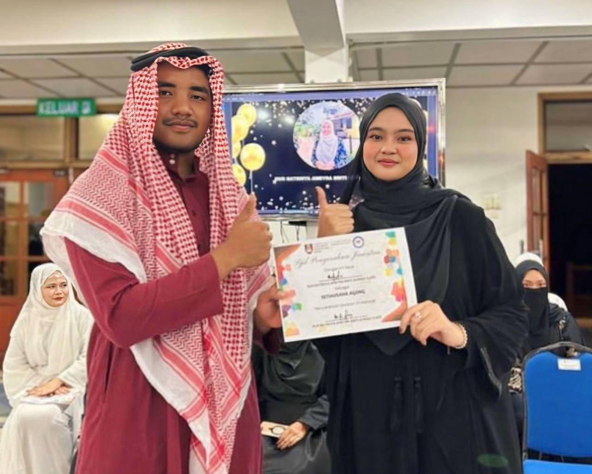

A highly motivated individual seeks to apply for a position in the Ministry of Health Malaysia. Committed to contributing to the enhancement of health policies, optimization of resource management, and improvement of public health outcomes. Skilled in collaborating with stakeholders to support initiatives aligned with Malaysia's national health goals and development agenda.
This website provide information of Ameyra.
Amy's Latest Achivements:
Final year Diploma of Information Management student.
Email: ameyrasukri@gmail.com
Phone: +60148896373